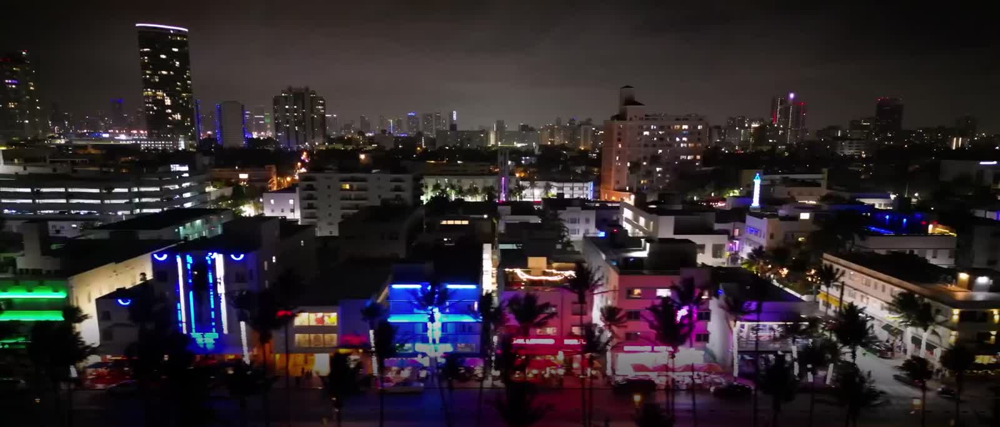

Пальмы на закате, архитектура ар-деко и свет неоновых вывесок. Майами давно стал декорацией для историй, в которых роскошь соседствует с опасностью.
В преддверии выхода Grand Theft Auto VI Caviar обращается к этому образу города. Most Wanted объединяет шесть моделей iPhone, Samsung и умных очков Ray-Ban в эстетике американского криминального кино.
Когда солнце уходит за горизонт, город меняет палитру. Розовые и бирюзовые огни создают тот самый образ Майами, знакомый по кино и видеоиграм.
Custom Ray-Ban Meta Wayfarer Gen 2
Sunset
Поймать свет ночного города
Яркое оформление оправы напоминает о вывесках ночного Майами. Розовые и бирюзовые акценты становятся продолжением его неоновых улиц.
Встроенная камера снимает видео до 3K от первого лица. Можно сохранить прогулку по городу или игровую сессию: экран, руки с контроллером и собственные комментарии.
Неоновая отделка · Видео от первого лица
Custom iPhone
Neon Vice
У ночи свой почерк
Холодный титан встречается с насыщенными цветами. Неоновый рисунок оживляет поверхность корпуса, а декоративное изображение пистолета отсылает к криминальным историям большого города.
В этом дизайне Caviar переосмысляет эстетику Майами через контраст металла и ярких цветовых акцентов.
Титановое исполнение · Неоновые элементы

Один город. Разные истории.
Добро пожаловать на Ocean Drive
02 / Золотой часThe golden side of Miami
Роскошь крупным планом
Исторические отели на побережье, дорогие автомобили и блеск золота. Другая сторона Майами, ставшая частью языка американского криминального кино.
Custom Samsung Fold8
Ocean Drive
Адрес красивой жизни
Золотой Samsung назван в честь знаменитой улицы Майами. Океанское побережье и исторические отели в стиле ар-деко сформировали её узнаваемый облик.
Атмосфера курортного гламура получает продолжение в золотой отделке смартфона. Геометрия декора напоминает о фасадах и интерьерах эпохи ар-деко.
Золотая отделка · Мотивы ар-деко
Custom iPhone
Gangster
Классика криминального кино
Центральный элемент композиции — декоративное изображение пистолета. Золотая отделка выделяется на тёмном фоне корпуса с тонким орнаментом.
Этот мотив обращается к традициям гангстерского кино, в котором дорогое оружие становится выразительной деталью образа героя.
Золотое оформление · Декоративный рельеф
Custom Ray-Ban Meta Wayfarer Gen 2
Gold Rush
Свой саундтрек к Майами
Золотое оформление дужек отсылает к образу роскоши в американском криминальном кино. Знакомый силуэт оправы получает новое прочтение Caviar.
Встроенные динамики позволяют слушать музыку со смартфона по Bluetooth. Управлять музыкой и съёмкой можно кнопками, сенсорной панелью и поддерживаемыми голосовыми командами.
Технические возможности идентичны Ray-Ban Sunset.
03 / Легенды ФлоридыWild Florida
У каждой легенды есть свой цвет
Флорида хранит истории не только о героях криминального кино. Одна из них рассказывает о загадочном розовом аллигаторе, которого якобы видели неподалёку от Эверглейдс.
Custom iPhone Duo
Pink Alligator
Легенда в розовом
Необычная история стала отправной точкой дизайна. Ярко-розовая отделка передаёт фактуру кожи аллигатора, а гравированный металл обрамляет заднюю панель.
В центре расположена эмблема Most Wanted с шестью звёздами. Розовый цвет превращает фольклорный образ в самый неожиданный акцент коллекции.
Фактурная отделка · Гравированный металл
Дизайн Caviar
Характер в каждой детали
Образы Майами раскрываются в отделке устройств. Неоновый рисунок, геометрия металла и фактура розовой панели по-разному передают характер одной коллекции.
Цвет Neon ViceРитм Ocean DriveФактура Pink Alligator